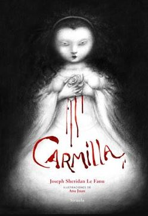

Carmilla
- Título: Carmilla
- Autor: Joseph Sheridan Le Fanu
- Editorial: -
- Año de primera edición: 1872
- Género: Horror
- ISBN: -
Sinopsis
La historia es contada en primera persona por Laura una muchacha, que ahora siendo toda una mujer relata cómo conoció a Carmilla, una de sus pocas amigas durante la adolescencia. Carmilla y su madre, por azares del destino (o tal vez no tanto) sufren un accidente frente a esta joven y su padre y este, haciendo uso de su amabilidad, acepta como huésped a la joven accidentada. La madre de Carmilla no puede retrasar el viaje por cuestiones urgentes, aceptando dejar a Carmilla al cuidado de la familia de Laura en su castillo. Poco a poco, Carmilla se vuelve más y más misteriosa, perdiéndose durante la noche sin dar explicaciones y a su vez Laura comienza a sentirse cada día más y más enferma. Luego de una investigación resultará que Carmilla no es quién dice ser.
Bien, se supone que en la sinopsis uno no debe contar la trama completa, por eso no aclaré lo obvio, pero vamos, todos sabemos qué es Carmilla en realidad. Es un libro de hace casi ciento cincuenta años, decir que hago spoiler es un absurdo. Creo que esta obra tiene menos reconocimiento del que se merece. Sé que Drácula es una obra excelente y merece todos los laureles que tiene (aunque todavía no la he leído) pero Carmilla fue la primera de todas, debería ser más reconocida de lo que es. Antes de comenzar a escuchar el audiolibro no pensé que los puntos y tópicos que se repiten en cuanto a los vampiros clásicos (Al menos la mayoría) fueran a estar presentes aquí. Siempre pensé que Carmilla era una especie de historia precursora en todo el sentido de la palabra, pero es mucho más que eso. Carmilla establece muchísimos aspectos de lo que se piensa cuando uno escucha la palabra “Vampiro” hoy en día. Por ejemplo que son criaturas cuasi-inmortales y que beben sangre para no morir. Lo que suma mucho en Carmilla, además de esto, es el acercamiento al lesbianismo en una historia tan antigua, pensar que esto se publicó en 1872 y que hoy en día sea lo que es, me alegra bastante. Todo esto fue una grata sorpresa.
La historia es bastante sencilla y predecible, posee ciertos giros interesantes en la trama, pero (además del spoiler vampírico) uno puede deducir que ocurrirá a continuación o por qué Laura comienza a enfermar de repente. Lo bueno de la trama es que cerca del final, antes de la conclusión final, existen ciertos pequeños giros respecto al origen de Carmilla y la mujer que supuestamente es su madre, que por mi parte no vi venir y que dan cierta complejidad interesante a la trama. Fuera de estos comentarios no hay mucho más que decir, es la primera historia de vampiros y la que estableció todo, es clara la recomendación y mejor no contar nada más sobre ella. Algo que también es casi innecesario comentar es el estilo narrativo de LeFanu. Tomando en cuenta lo conocida que es la historia y la época en qué fue publicada es fácil saber que se tratará de un estilo gótico de la época, con castillos llenos de cuartos vacíos, bosques espesos y neblinosos, historias de fantasmas de por medio, etc. Es un estilo que a esta clase de historias le queda genial, no tengo mucho más que decir. Por ultimo, los personajes no son tan importantes… vamos, es una historia corta de terror de la época, los personajes (sin contar a Carmilla) podrían haber sido cualquiera, en esta clase de historias no tienen tanta importancia. Sí me gustó el pasado de Carmilla, su origen, como vivía su vida de vampira antes de conocer a Laura y varios puntos más, que mejor descubrir por uno mismo.